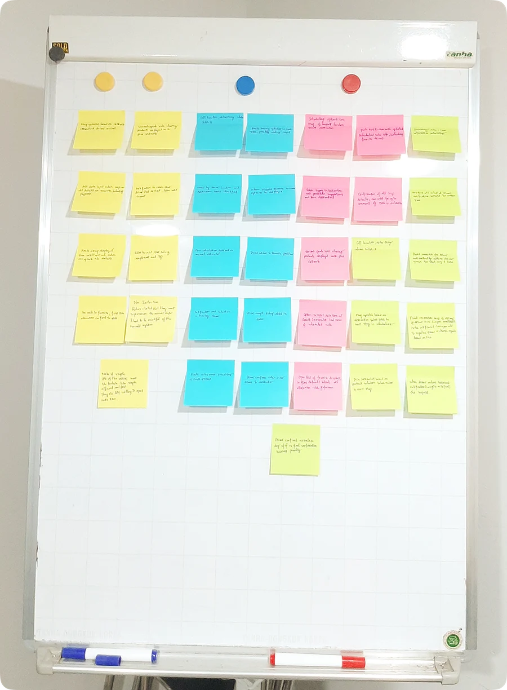
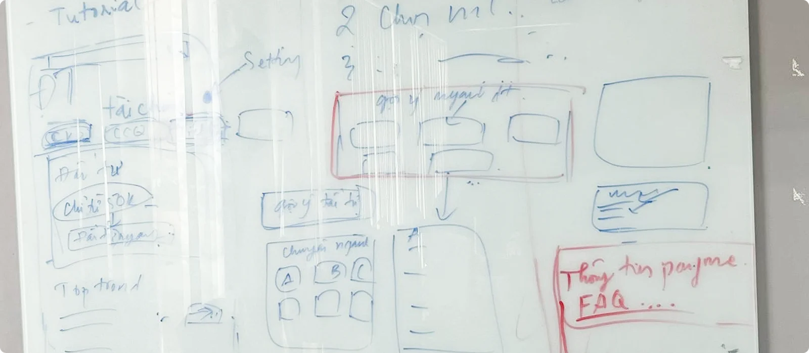
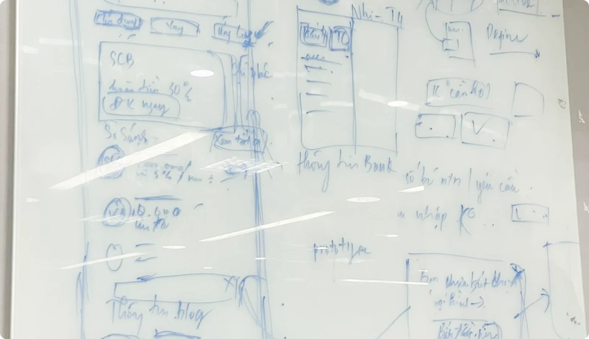

How I lead
I want people to understand the bigger picture, not only their part of the work.
I like seeing where a product is heading, connecting ideas across teams, and helping people work toward the same goal. For me, leading starts with being open about what we’re trying to do, why it matters, and how each person can contribute.
01My leadership approach
From big picture to everyday decisions.
I try to give people the context they need, a place where sharing ideas feels safe, and the confidence to make decisions. Good products come from different perspectives. My job is to bring them together.
Transparency
Share context, decisions and problems openly.
Collaboration
Bring the right people into the conversation early.
Alignment
Help teams see past their own part of the work.
Ownership and growth
Give people room to own things, and support them as they do.
02People management
Different people need different kinds of support.
At PayME I managed a design team of six, from hiring to performance reviews. I try to learn each person’s strengths, interests and problems, so I know what kind of help they need.
Hiring
Ran interviews to find people who fit the team and the product.
Ownership
Gave each person a product area that fit their interests and strengths.
1:1s and feedback
Regular 1:1s, design reviews and feedback along the way.
Performance
Reviewed work against clear criteria and each person’s goals.
Career growth
Talked about career goals and helped people find the next step.
03Leadership in practice
Bringing product and business into the same conversation.
At PayME, the company was growing from a payment wallet into a wider financial platform. I worked with product, business, marketing and engineering to turn that vision into what we needed to design and build.
I ran workshops, planning sessions, product and design syncs, and stakeholder reviews. We used them to agree on priorities, talk through trade-offs and make decisions together, not only to report progress.
Read the PayME caseFrom strategy to execution
- Productroadmap
- Marketingstrategy
- Engineeringconstraints
- Customerinsights



From the room. Grouping notes in a team workshop, and sketching the finance home and lending screens together at PayME.
04Mentoring
Sharing what I’ve learned.
Mentoring reminds me why I like this work. I break complicated things down, share what I learned the hard way, and watch someone get more confident in how they think.
I don’t try to give all the answers. I’d rather talk it through, ask questions and look at a problem from different angles. I often learn something myself.
“The session was really helpful! I feel more confident about my design process and how to present my work. I really appreciate your guidance and practical advice.”
05Lessons learned
Things I’m still learning.
Leading hasn’t always been easy. These are things I learned, and still work on.
Explain the why, then the solution.
I used to focus on finding the right solution without explaining my reasoning and the trade-offs. Now I try to make my thinking clear, especially to people outside design.
Bring people in earlier.
I now involve stakeholders sooner, raise risks early and ask more questions, so there are fewer surprises later.
Get better at performance reviews.
I ran reviews at PayME, but I was still learning how to judge work fairly and give feedback that actually helps people grow.
What I believe
A good lead doesn’t need every answer.
The job is helping people see where we’re going, bringing different views together and making room for others to contribute. I want to build teams where people feel trusted, where feedback helps, and where everyone can grow.